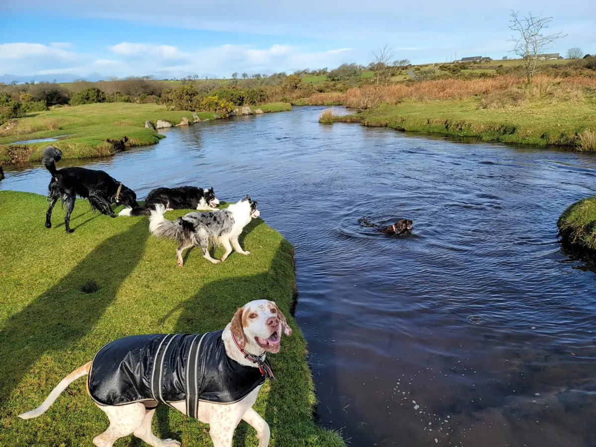
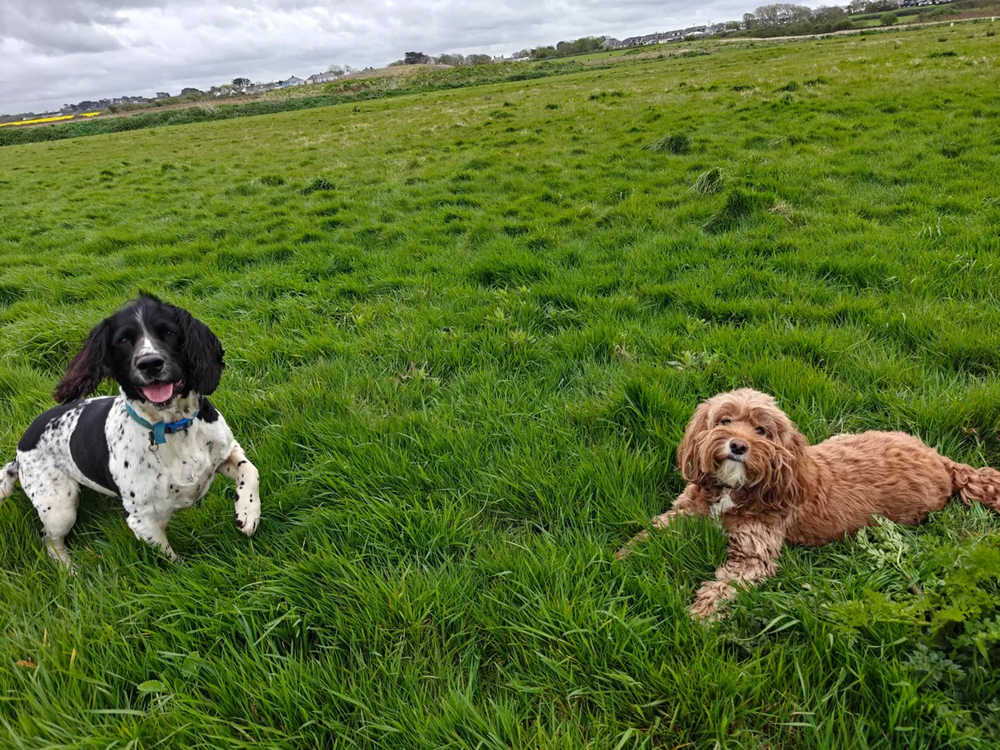

Weekend Dog Daycare in Newquay, Cornwall
Full day adventures to Bodmin Moor, woodlands & beaches. Small pack, big adventures.
A Full Day Out, Not a Kennel with a Garden
Every Saturday and Sunday, I pick up a small group of dogs — never more than four — and we head out to Bodmin Moor, the river trails near Crantock, or one of the quieter beaches along the coast. Hiking, swimming, sniffing, the lot. Your dog spends the whole day outdoors in the Cornish air and comes home absolutely knackered.
I keep the pack small on purpose. It means every dog gets proper attention and it's easier to manage different personalities. Some dogs are confident swimmers, others prefer to stick to the paths — I work with whatever your dog enjoys.
Pick-up and drop-off are included. I collect from your door at 9 and have them home by half four. You get photo updates throughout the day.
A Typical Daycare Day
Where We Go
We rotate locations to keep every day fresh. Here are some of our regulars.

Colan & Ellenglaze
Quiet woodland trails and open fields just outside Newquay. Perfect for dogs who love to sniff and explore without the crowds.

Sang & Crantock
River paths, sandy beaches, and sheltered swimming spots. A favourite for dogs who love water and wide-open spaces.
Adventures in Action
A glimpse of what daycare days look like.



Daycare Pricing
One simple price. Everything included.
Full Day Adventure
£30
per day · 09:00 – 16:30
- ✓ Pick-up and drop-off from your door
- ✓ Full day of hiking, swimming & exploring
- ✓ Small pack sizes (max 4 dogs)
- ✓ Photo updates throughout the day
- ✓ Rinse and dry before drop-off
- ✓ Fresh water and treats provided
- ✓ Fully insured & canine first aid certified
Daycare FAQs
Where do you go for Daycare?
We vary our locations to keep things exciting! Regular spots include Bodmin Moor, expansive woodlands, and dog-friendly beaches across Cornwall. The destination depends on the weather, the pack, and the season.
Do you take unneutered dogs?
We assess each dog individually during our meet & greet. Safety and pack harmony are our top priorities, so we'll have an honest conversation about whether daycare is the right fit.
What about anxious dogs?
We keep our pack sizes small deliberately, which means less overwhelm for nervous dogs. We also offer gradual introductions — your dog can start with a shorter session alongside just one calm companion before joining the full group.
What Our Daycare Families Say
"Meg absolutely loves her day with Oli and I always have a peaceful evening as she snoozes after her big adventure. Can't recommend enough — she gets so excited when she sees the car pull up!"
Weekend Daycare"Oli and the team treat my mad staffy like one of the family. Could not recommend them highly enough — she comes home absolutely shattered and happy every single time."
Weekend DaycareJust need an evening walk? I do 60-minute walks across Newquay every evening from 5pm.
Evening Dog Walking →Ready to Book?
Every daycare dog starts with a free meet & greet so we can get to know each other. Get in touch to arrange yours.